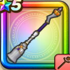

トワイライトブルーム
攻略班 7.5点 / ザオキアリーマホトーンパンプキンエールトワイライトヒール※錬成で強化可能
くわしい特徴
【レベル別習得スキル】 Lv1【賢者】かいふく魔力+5 Lv1ザオ（消費MP：15）仲間ひとりをHP25%で復活させる Lv10キアリー（消費MP：5）仲間ひとりの毒・猛毒をなおす Lv15マホトーン（消費MP：21）敵全体の呪文を封じる Lv20パンプキンエール（消費MP：22）仲間ひとりの守備力を上げHPを回復し、呪文ダメージを1回だけ20%軽減する効果をたまに与える。回復量はホイミと同等。 Lv30トワイライトヒール（消費MP：40）仲間全員のHPを回復し、呪文ダメージを1回だけ20%軽減する効果をまれに与える Lv35じゅもんHP回復効果+10% Lv40シャドーサタンとの戦闘時スキルHP回復効果+20% Lv45さいだいMP+12 Lv50回復魔力+12錬成スキル改1パンプキンエール改（消費MP：24）仲間ひとりのしゅび力を上げHPを回復する。さらに受けた呪文ダメージを1回だけ20%軽減する効果を与える改2トワイライトヒール改（消費MP：42）満ちた月の力により仲間全員のHPを回復し、受けた呪文ダメージを1回だけ20%軽減する効果をたまに与える改3【夜】スキルHP回復効果+5%改4錬成ぶき特別演出解放・メガモン討伐結果発表時に特別演出が追加・武器の見た目に特別なエフェクトが追加 【限界突破スキル】 1凸とくぎHP回復効果+5% 2凸じゅもんHP回復効果+5% 3凸とくぎHP回復効果+5% 4凸じゅもんHP回復効果+5%